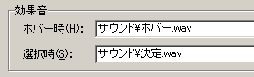
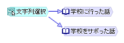
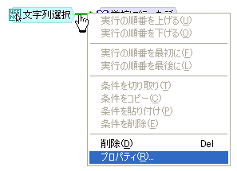
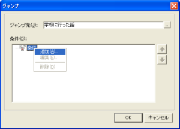
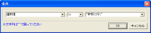
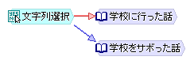

[文字列選択]ノードが作成されます。
ノードをダブルクリックして、設定ダイアログを表示します。
選択ウィンドウを表示する横の位置を、左寄せ・中央寄せ・右寄せの中から選ぶか、または直接座標で指定します。
縦の位置：
選択ウィンドウを表示する縦の位置を、上寄せ・中央寄せ・下寄せの中から選ぶか、または直接座標で指定します。
[キャプション]は選択肢として表示する文字列です。変数の内容を表示する場合は[式として記述]のチェックを付けてください。式にすると、例えば「basho」という変数を使って「basho」や「basho ++ "に行く"」といった記述ができます。
[条件]は、この選択肢を表示するかどうかの条件です。条件の設定方法の詳細はこちらをご覧ください。

このようにして選択肢を追加します。
[キャンセル許可]のチェックを付けると、プレイヤーが右クリックで選択をキャンセルすることができます。


※「学校に行った話」、「学校をサボった話」の順で矢印を引きます



※このケースの場合、「選択番号 == 0」でも同様の結果になります

このケースは２択なので「学校をサボった話」に進むジャンプには条件を付けていません。３択なら最初と２番目に条件を付け、３番目には条件を付けない、となります。